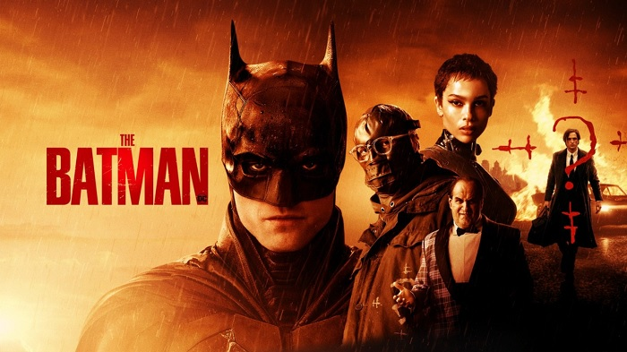
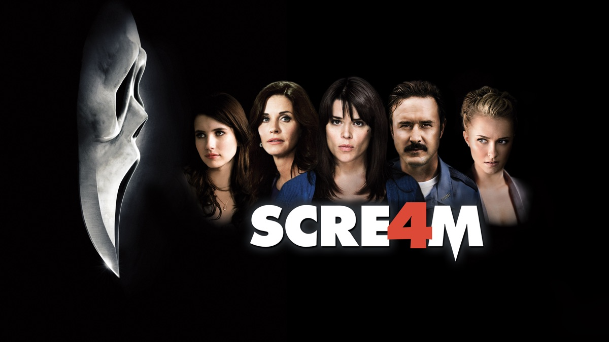
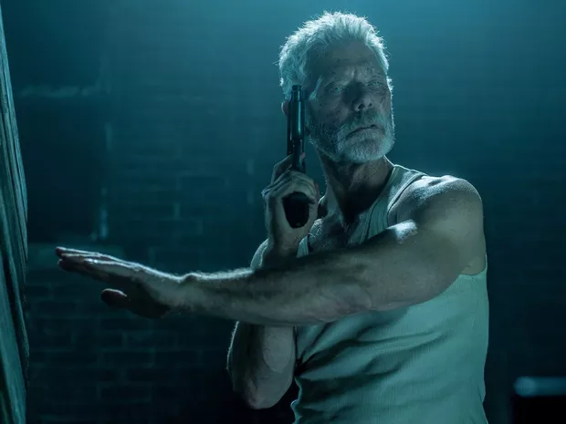
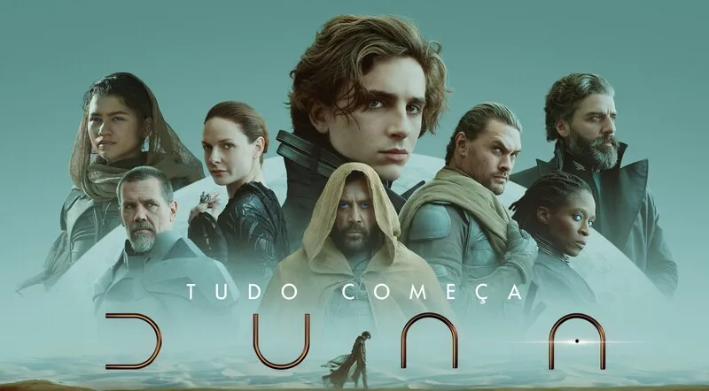
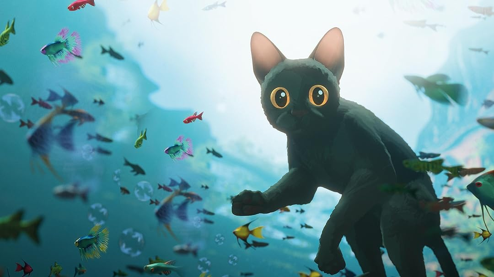
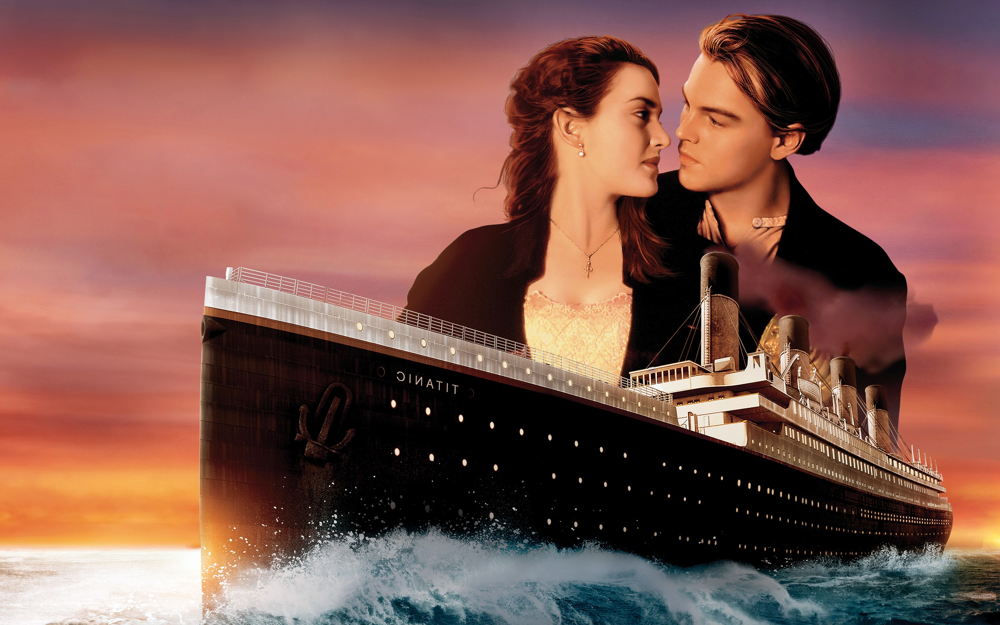
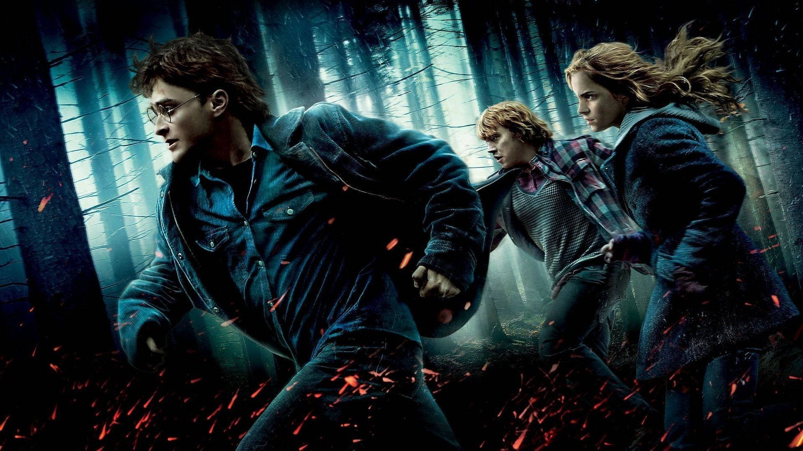
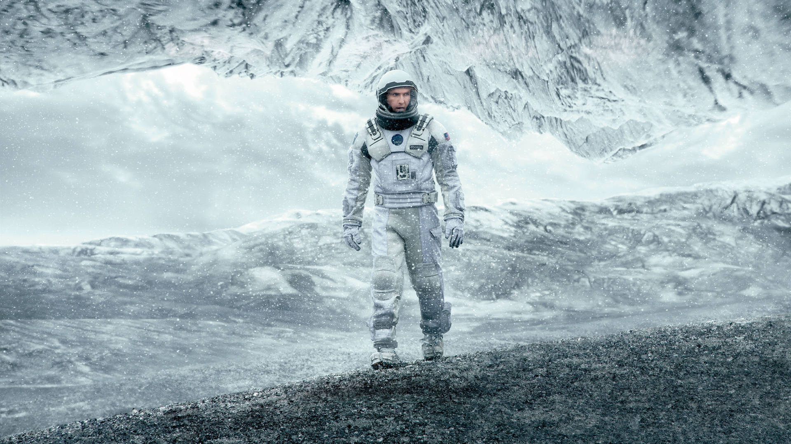

Destaque










John Wick, Capítulo 3
• 2h 11min
Após matar um membro da Alta Cúpula, John Wick se torna alvo de assassinos do mundo inteiro. Ele precisa lutar por sua sobrevivência enquanto busca ajuda.

Titanic
• 3h 14min
Em meio à trágica viagem inaugural do navio Titanic, nasce o romance entre Jack e Rose. A história de amor se desenrola rumo ao destino fatal.

Harry Potter e as Relíquias da Morte
• 2h 26min
Harry, Rony e Hermione deixam Hogwarts para destruir as Horcruxes de Voldemort em uma jornada repleta de perigos e segredos.

Interestelar
• 2h 49min
Em um futuro onde a Terra está morrendo, astronautas viajam por um buraco de minhoca em busca de um novo lar para a humanidade.